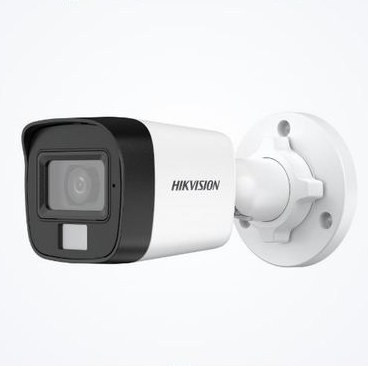

كل المنتجات ← كاميرات وأجهزة هيكفيجن
الموديل: DS-2CE16U0T-LF

| الماركة | هيكفيجن |
|---|---|
| الموديل | DS-2CE16U0T-LF |
| نوع المنتج | كاميرا بوليت خارجية |
| الكاميرا | |
| حساس الصورة | 4K CMOS |
| أقصى دقة | 3840 (H) × 2160 (V) |
| أدنى إضاءة | 0.01 لوكس @ (F1.6، AGC مفعّل)، 0 لوكس مع الأشعة تحت الحمراء |
| سرعة الغالق | PAL: 1/12.5 s to 1/50, 000 s NTSC: 1/15 s to 1/50, 000 s |
| ليلي/نهاري | فلتر ICR |
| ضبط الزاوية | أفقي: 0 to 360°, رأسي: 0 to 90°, دوران: 0 to 360° |
| نظام الإشارة | PAL/NTSC |
| العدسة | |
| نوع العدسة | 2.8 مم and 3.6 مم fixed focal lens |
| البعد البؤري وزاوية الرؤية | 2.8 مم, زاوية الرؤية الأفقية: 108°, زاوية الرؤية الرأسية: 59°, زاوية الرؤية القطرية: 127° 3.6 مم, زاوية الرؤية الأفقية: 88°, زاوية الرؤية الرأسية: 44°, زاوية الرؤية القطرية: 105° |
| تركيب العدسة | M12 |
| الإضاءة | |
| مدى الإضاءة المساعدة | IR : حتى 30 متر White Light : حتى 20 متر |
| نوع الإضاءة المساعدة | ذكية، أشعة تحت الحمراء، إضاءة بيضاء |
| الصورة | |
| إعدادات الصورة | السطوع، الحدة، IR الذكي |
| معدل الإطارات | TVI: 8 MP @12.5 fps, 8 MP @15 fps, 4 MP @25 fps, 4 MP @30fps, 2 MP @25 fps, 2 MP @30 fps AHD: 8MP@15fps CVI: 8MP@12.5fps, 8MP@15fps CVBS: PAL/NTSC |
| الوضع الليلي/النهاري | تلقائي/ملون |
| النطاق الديناميكي الواسع (WDR) | WDR رقمي |
| تحسين الصورة | DWDR / BLC / HLC / شامل |
| توازن اللون الأبيض | تلقائي/يدوي |
| التحكم التلقائي في الكسب AGC | نعم |
| الواجهات | |
| إخراج الفيديو | قابل للتبديل بين TVI/AHD/CVI/CVBS |
| عام | |
| الطاقة | 12 VDC ± 25%, 0.45 A, max. 5.4 W,*You are recommended to use one power adapter to supply the power for one camera. |
| الخامة | معدن |
| الأبعاد | 138.8 مم × Ø70 مم (5.46" × Ø2.76") |
| ظروف التشغيل | من -40 °C إلى 60 °C (من -40 °F إلى 140 °F), رطوبة : 90% أو أقل (بدون تكثيف) |
| الاتصال | HIKVISION-C |
| اللغة | الإنجليزية |
| الاعتمادات | |
| الحماية | IP67 |